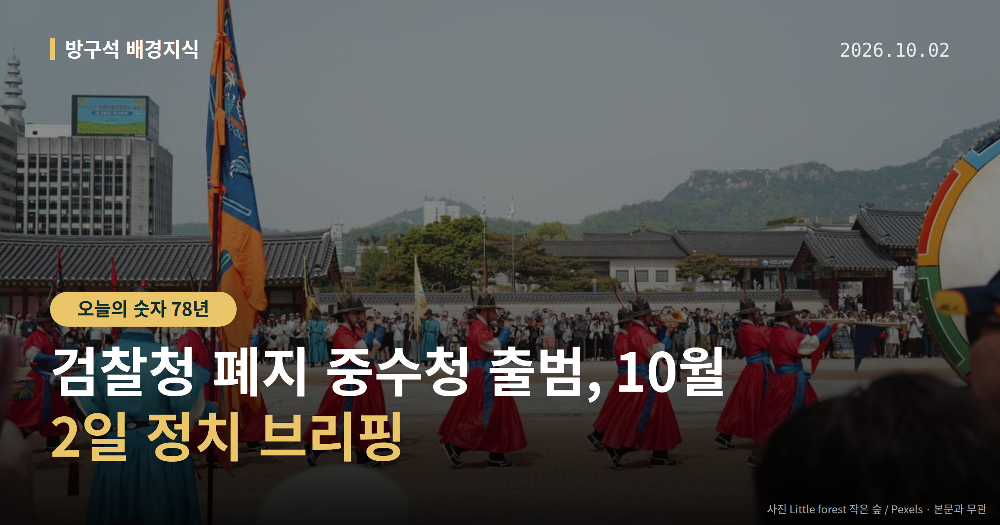
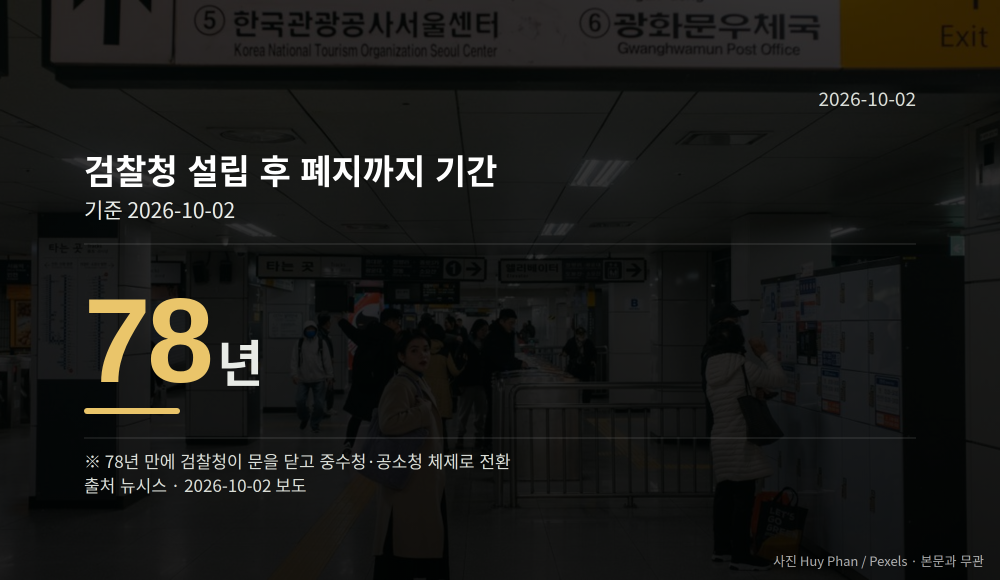

이 글은 2026년 10월 2일 기준으로 정리한 내용입니다.
여러분, 10월 2일부터 형사사건을 다루는 창구가 바뀝니다. 검찰청 폐지 중수청 출범으로 수사와 기소가 완전히 분리되고, 고소·고발은 경찰과 중대범죄수사청으로 접수됩니다.
다만 중수청의 수장 자리는 아직 비어 있는 상태로 제도가 시행됐습니다. 오늘은 이 한 가지를 중심으로 정리해 보겠습니다.
수사는 경찰과 중대범죄수사청(중수청)이 맡고, 기소와 공소 유지는 공소청이 맡습니다. 기소는 재판에 넘기는 절차를 말합니다.
공소청 검사와 수사관은 직접 수사를 할 수 없습니다. 검사의 직접 보완수사권(기소하기 전 부족한 부분을 검사가 직접 더 조사하는 권한)도 폐지됐습니다.
앞으로 고소·고발은 경찰·중수청으로 접수됩니다. 뉴시스에 따르면 검찰청은 설립 78년 만에 문을 닫게 됩니다.

이재명 대통령은 10월 1일 김지용 중수청장 후보자에 대한 인사청문요청안을 재가했습니다. 청와대는 같은 날 "금명간 인사청문요청안을 국회에 보낼 예정"이라고 밝혔습니다.
브리핑은 성기홍 청와대 홍보소통수석이 했습니다. 경향신문 보도에 따르면 이 대통령은 김 내정자가 '친윤석열·반개혁 인사'라는 여권 일각의 주장이 사실과 다르다고 판단했습니다. 이 주장을 제기한 주체는 자료에 구체적으로 나와 있지 않습니다.
경향신문은 수장이 공석이고 후속 법령 정비가 끝나지 않은 상태에서 2일 출범하게 돼 초기 혼란 가능성이 있다고 전했습니다. 청문요청안이 국회에 제출되면 인사청문회 절차가 남습니다.
조국 조국혁신당 혁신정책연구원장은 10월 1일 유튜브 '박시영TV'에서 김 후보자를 "검찰주의자"라고 평가했습니다. 초대 중수청장은 "표적·먼지떨이·정치 수사 안 할 사람"이어야 한다며 김 후보자가 이에 맞는지 의문이라고 말했습니다.
조 원장은 친윤 여부에 대해서는 "회색지대에 있었다"면서도 "검찰주의자였던 것은 아무도 부인하지 않을 것"이라고 했습니다. 이는 조 원장 본인의 평가이며, 김 후보자의 반박이나 해명은 확인되지 않았습니다.
반대편 발언도 있습니다. 청와대는 "김지용, 검찰개혁 의지 확고"라는 입장을 밝혔고, 이 대통령은 "검사 출신 배제 안 돼"라고 말했습니다. 박균택 민주당 의원은 "초대 중수청장에 적임자"라고, 박지원 의원은 "윤석열 장모를 감옥에 보내자고 한 사람이면 의로운 검사였다"고 말했습니다.
다만 임명을 반대해온 다른 범여권 법사위원들의 입장은 그대로였다고 보도됐습니다. 이들의 명단과 반대 논리는 자료에 담겨 있지 않습니다.
국회의원 발의 법률안 115건. 가장 최근은 5·18민주화운동 관련자 보상 등에 관한 법률 일부개정법률안(이진숙의원 등 11인).
본회의 처리 법률안 65건 — 원안가결 47건 · 수정가결 16건 · 부결 1건 · 철회 1건
이번 주 등록된 선거 여론조사 8건
열린국회정보·중앙선거여론조사심의위원회 자료를 직접 셌습니다. 여론조사의 자세한 사항은 중앙선거여론조사심의위원회 홈페이지를 참조하세요.
여러분이 직접 고소·고발을 해야 하는 상황이라면, 바뀐 접수 창구 가운데 어디부터 알아보시겠어요?
댓글로 알려 주시면 다음 글에 반영하겠습니다.